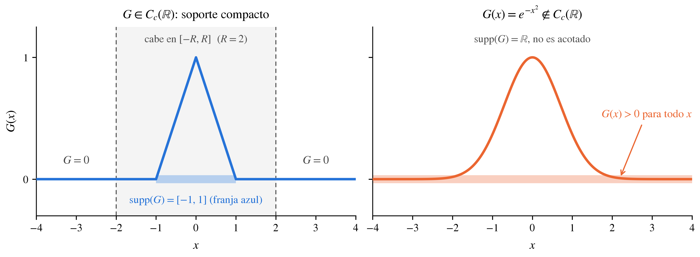
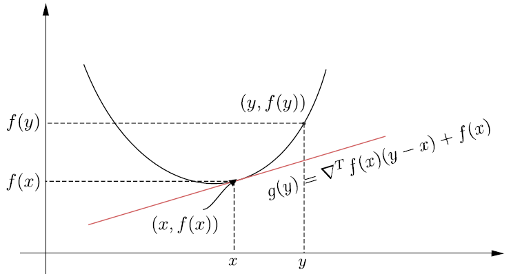

8. Apéndice#
En este apéndice, resumimos algunas definiciones y teoremas básicos sobre los
espacios de Hilberty elanálisis convexo, así como las herramientas de análisis funcional, teoría de la medida y análisis de Fourier que se usan en la demostración del teorema de aproximación universal para redes de una capa oculta. Salvo donde se indique lo contrario, no se proporcionan pruebas, el lector interesado puede consultar libros más especializados, que se indican en las referencias.
Definition 8.1 (Espacios lineales)
Un conjunto no vacío de elementos, \(V\), se llama espacio lineal si hay definidas dos operaciones, adición y multiplicación escalar, de modo que se cumplen las siguientes propiedades:
\(\boldsymbol{x}+\boldsymbol{y}=\boldsymbol{y}+\boldsymbol{x},\quad\forall\,\boldsymbol{x},\boldsymbol{y}\in V\)
\((\boldsymbol{x}+\boldsymbol{y})+\boldsymbol{z}=\boldsymbol{x}+(\boldsymbol{y}+\boldsymbol{z}),\quad\forall~\boldsymbol{x}, \boldsymbol{y}, \boldsymbol{z}\in V\)
Existe un elemento \(\boldsymbol{0}\in V\), conocido como el vector cero, tal que, \(\forall\boldsymbol{x}\in V,~\boldsymbol{x}+\boldsymbol{0}=\boldsymbol{x}\)
\(\forall~x\in V\), existe un \(\boldsymbol{y}\in V\) tal que \(\boldsymbol{x}+\boldsymbol{y}=0\).
Para cada par de escalares \(\alpha, \beta\in\mathbb{C}\) y \(\forall~\boldsymbol{x},\boldsymbol{y}\in V\),
Para cada par de escalares \(\alpha,\beta\in\mathbb{C},~\forall~\boldsymbol{x}\in V,\quad (\alpha+\beta)\boldsymbol{x}=\alpha\boldsymbol{x}+\beta\boldsymbol{x}\)
\(\forall\boldsymbol{x}\in V\), y el escalar \(1\in\mathbb{C},\quad 1\boldsymbol{x}=\boldsymbol{x}\)
Los espacios lineales se denominan a veces espacios vectoriales y los elementos de \(V\) vectores. Si los escalares \(\alpha, \beta\) están restringidos en \(\mathbb{R}\), entonces el espacio lineal se conoce como espacio lineal real; de lo contrario, si \(\alpha, \beta \in\mathbb{C}\), el espacio lineal se conoce como espacio lineal complejo.
Example 8.1 (El espacio vectorial \(\mathbb{R}^{l}\))
El conjunto de \(l-\)tuplas \(\boldsymbol{x}:=(x_{1}, x_{2},\dots, x_{l}),~x_{i}\in\mathbb{R},~i=1,2,\dots,l\), es un espacio vectorial real, donde la adición y la multiplicación están definidas como
Example 8.2
Sea el conjunto de todas las funciones reales
donde \(\boldsymbol{f}\) denota la función general, en vez de la evaluación en un punto especifico \(x\in\mathbb{R}\). Entonces \(\mathcal{F}(\mathbb{R})\) es un espacio lineal real con respecto a las siguientes operaciones
Definition 8.2
Sea \(V\) un espacio lineal y \(S\) un conjunto no vacio, \(S\subseteq V\). Entonces \(S\) es llamado un subespacio de \(V\) si
\(\forall\boldsymbol{x}, \boldsymbol{y}\in S,\quad \boldsymbol{x}+\boldsymbol{y}\in S\)
\(\forall a\in\mathbb{C}\), y \(\boldsymbol{x}\in S,~a\boldsymbol{x}\in S\)
Definition 8.3 (Independencia Lineal)
Sea \(V\) un subespacio lineal y \(S\subseteq V\). Decimo que \(S\) es linealmente independiente si existe un número finito de elementos distintos, \(x_{k}\in S,~i=1,2,\dots,K\), tal que
para alguna combinación de escalares \(a_{k}\in\mathbb{C},~k=1,2,\dots,K\), los cuales no son todos ceros. Si este no es el caso, el conjunto \(S\) es linealmente independiente
Definition 8.4 (Subespacio generado)
Sea \(S\) un subconjunto no vacio \(S\subseteq V\). El conjunto de todas las combinaciones lineales posibles, denotado como \(\text{span}\{S\}\),
y es conocido como el \(\textbf{generado}\) de \(S\). Note que \(\text{span}\{S\}\) es siempre un subespacio de \(V\). Además si \(\text{span}\{S\}=V\), decimos que \(S\) genera al espacio \(V\).
Definition 8.5 (Bases)
Sea \(V\) un subespacio lineal y \(S\subseteq V\). El conjunto \(S\) es conocido como base de \(V\), si y solo si:
\(S\) es linealmente independiente
\(S\) genera a \(V\)
Si el número de elementos que componen \(S\) es finito, decimos que \(V\) es de dimensión finita y el número de elementos distintos de S define la dimensión de \(V\). Si el número de elementos de \(S\) no es finito, decimos que \(V\) es de dimensión infinita.
Nótese que no hay una base única en \(V\). Sin embargo, cualquier base de \(V\) tiene el mismo número de elementos. Además, se ha demostrado que todo espacio lineal tiene una base. Esto se conoce como el Lema de Zorn. Sin embargo, encontrar una base no es necesariamente una tarea trivial. La dimensión de \(\mathbb{R}^{l}\) es \(l\), y el espacio lineal \(\mathcal{F}(\mathbb{R})\) es de dimensión infinita.
Espacio vectorial de polinomios en \(x\) con coeficientes racionales
Sea \(P\) el espacio vectorial de todos los polinomios en \(x\) con coeficientes racionales, con la adición de polinomios habitual como suma de vectores y la multiplicación de un polinomio por un número racional como multiplicación por escalar. Afirmamos que \(P\) es de dimensión infinita.
En efecto. Supongamos, por el contrario, que \(P\) es generado por \(k\) polinomios en \(P\), \(\{p_{1}, p_{2},\dots,p_{k}\}\). Sea \(m\) el máximo de los grados de estos \(k\) polinomios.
Entonces \(x^{m+1}\) es un vector en \(P\), pero no puede ser escrito como una combinación lineal de \(\{p_{1}, p_{2}, \dots, p_{k}\}\) porque tomar combinaciones lineales de polinomios de grado como máximo \(m\) no puede dar polinomios de grado mayor que \(m\).
Por lo tanto, \(x\) no está en el generado de \(\{p_{1}, p_{2},\dots,p_{k}\}\), lo cual es una contradicción.
En lo que sigue usaremos polinomios en varias variables, con coeficientes reales y grado acotado. A diferencia del espacio de todos los polinomios (que es de dimensión infinita, como se vio arriba), estos forman un subespacio de dimensión finita.
Definition 8.6 (Polinomios de grado total a lo sumo \(d\))
Sea \(n\in\mathbb{N}\). Un monomio en \(n\) variables es una expresión
cuyo grado total es \(|p|:=p_{1}+\dots+p_{n}\). Un polinomio de grado total a lo sumo \(d\) es una combinación lineal real de monomios con \(|p|\leq d\). Denotamos por \(\mathcal{P}_{d}\) el espacio vectorial real de estos polinomios.
Por ejemplo, para \(n=1\) se tiene \(\mathcal{P}_{d}=\text{span}\{1,x,\dots,x^{d}\}\), y para \(n=2\), \(d=2\), \(\mathcal{P}_{2}\) está generado por los seis monomios \(1,\,x_{1},\,x_{2},\,x_{1}^{2},\,x_{1}x_{2},\,x_{2}^{2}\).
Dimensión. Los monomios de grado total \(\leq d\) generan \(\mathcal{P}_{d}\), y su cantidad es \(\binom{n+d}{d}\). Para contarlos se agrega una variable de holgura \(p_{n+1}:=d-|p|\geq0\): cada monomio corresponde a una solución en enteros no negativos de \(p_{1}+\dots+p_{n+1}=d\), y el número de tales soluciones es \(\binom{n+d}{d}\) (método de “estrellas y barras”). Por lo tanto
Para \(n=1\) la cota es \(d+1\) y para \(n=2\), \(d=2\) es \(\binom{4}{2}=6\). La desigualdad puede ser estricta si los polinomios se consideran como funciones restringidas a un conjunto pequeño (por ejemplo, un segmento de recta en \(\mathbb{R}^{2}\), donde algunos monomios dejan de ser independientes); lo único que importa aquí es que la dimensión es finita.
Theorem 8.1 (Teorema multinomial)
Para \(a_{1},\dots,a_{m}\in\mathbb{R}\) y \(k\in\mathbb{N}_{0}\),
Para \(m=2\) se recupera el teorema del binomio.
Proposition 8.1 (Un polinomio univariado compuesto con una función afín)
Sea \(\sigma(t)=\sum_{k=0}^{d}a_{k}t^{k}\) un polinomio de grado a lo sumo \(d\), \(\boldsymbol{w}\in\mathbb{R}^{n}\) y \(b\in\mathbb{R}\). Entonces la función \(\boldsymbol{x}\mapsto\sigma(\boldsymbol{w}^{\top}\boldsymbol{x}+b)\) pertenece a \(\mathcal{P}_{d}\).
Justificación. Por el teorema multinomial con \(m=n+1\), \(a_{i}=w_{i}x_{i}\) para \(i\leq n\) y \(a_{n+1}=b\), el desarrollo de \((\boldsymbol{w}^{\top}\boldsymbol{x}+b)^{k}\) es una suma de términos de la forma (constante)\(\cdot\,x_{1}^{q_{1}}\cdots x_{n}^{q_{n}}\) con \(q_{1}+\dots+q_{n}\leq k\) (el exponente restante \(q_{n+1}\) recae sobre la constante \(b\)). Como \(k\leq d\), cada término es un monomio de grado total \(\leq d\), y al sumar sobre \(k\) con los coeficientes \(a_{k}\) se obtiene un elemento de \(\mathcal{P}_{d}\).
Ejemplo con \(n=2\) y \(\sigma(t)=t^{2}\):
que es una combinación lineal de los seis monomios de \(\mathcal{P}_{2}\).
Idea central. Si la función de activación es un polinomio de grado \(d\), todas las neuronas, sean cuales sean \(\boldsymbol{w}\) y \(b\), viven en el mismo espacio \(\mathcal{P}_{d}\) de dimensión finita. Añadir más neuronas no permite salir de él.
Definition 8.7 (Espacio con producto interno)
Sea \(V\) un espacio lineal. El producto interno es una función
la cual asigna un valor en \(\mathbb{C}\), denotado \(\langle\boldsymbol{x}, \boldsymbol{y}\rangle\), para cada punto de elementos \(\boldsymbol{x}, \boldsymbol{y}\in V\), con las siguientes propiedades:
\(\langle\boldsymbol{x}, \boldsymbol{y}\rangle\geq0\), y \(\langle\boldsymbol{x}, \boldsymbol{y}\rangle=0\) si y solo si \(\boldsymbol{x}=0\)
\(\langle\boldsymbol{x}+\boldsymbol{y}, \boldsymbol{z}\rangle=\langle\boldsymbol{x}, \boldsymbol{z}\rangle+\langle\boldsymbol{y}, \boldsymbol{z}\rangle\)
\(\langle a\boldsymbol{x}, \boldsymbol{y}\rangle=a\langle\boldsymbol{x}, \boldsymbol{y}\rangle\)
\(\langle\boldsymbol{x}, \boldsymbol{y}\rangle=\langle\boldsymbol{y}, \boldsymbol{x}\rangle^{\star}\)
donde \(\star\) denota la conjugación compleja. Un espacio donde un producto interno a sido definido es conocido como un espacio con producto interno.
Definition 8.8
Consideremos el espacio vectorial \(\mathbb{C}^{l}\). Entonces la operación
es un producto interno con \(\boldsymbol{x}, \boldsymbol{y}\in\mathbb{C}^{l}\).
Definition 8.9 (Norma y espacios normados)
Sea \(V\) un espacio lineal sobre el cuerpo \(\mathbb{K}\), donde \(\mathbb{K}=\mathbb{R}\) o \(\mathbb{K}=\mathbb{C}\). Una norma es una función
que asigna un número real no negativo a cada \(\boldsymbol{x}\in V\), esta es denotada como \(\|\boldsymbol{x}\|\) y tiene las siguientes propiedades
\(\|\boldsymbol{x}\|\geq0,\quad\) \(\|\boldsymbol{x}\|=0\quad\text{sii}\quad\boldsymbol{x}=\boldsymbol{0}\)
\(\|a\boldsymbol{x}\|=|a|\|\boldsymbol{x}\|,\quad\forall a\in\mathbb{K},\quad\text{y}\quad\boldsymbol{x}\in V\)
\(\|\boldsymbol{x}+\boldsymbol{y}\|\leq\|\boldsymbol{x}\|+\|\boldsymbol{y}\|,\quad\forall\boldsymbol{x}, \boldsymbol{y}\in V\).
Un espacio lineal \(V\) dotado de una norma \(\|\cdot\|\) se denomina espacio lineal normado, y se denota por el par \((V,\|\cdot\|)\).
Dado un espacio lineal, podemos definir diferentes normas. Por ejemplo, el espacio vectorial \(\mathbb{C}^{l}\). Entonces definimos la norma \(l_{p}\) como
Se puede demostrar que la definición anterior cumple con todas las propiedades requeridas para que una función sea una norma. Para \(p = 1\), nos referimos a la norma \(l_{1}\) y para \(p = 2\) se conoce como \textbf{norma euclidiana} o norma \(l_{2}\). Nótese que esta última resulta de la operación de producto interior, es decir,
Esto es válido para cualquier espacio lineal de producto interno. Es decir, dado un espacio lineal con producto interno, \(V\), con \(\langle\cdot,\cdot\rangle\), entonces la operación de producto interior induce una norma, es decir
Theorem 8.2 (Desigualdad de Cauchy-Schwarz)
Sea \(V\) un espacio de producto interno y el reproductor por la norma del producto interior. Entonces
Esta es una de las propiedades más fundamentales e importantes en la teoría de los espacios lineales. Una consecuencia directa de la desigualdad de Cauchy-Schwarz son las siguientes propiedades: Dado un espacio vectorial interior y su norma inducida \(\|\boldsymbol{x}\|\), entonces
\(\left|\|\boldsymbol{x}\|-\|\boldsymbol{y}\|\right|\leq\|\boldsymbol{x}-\boldsymbol{y}\|\)
\(\|\boldsymbol{x}+\boldsymbol{y}\|^{2}+\|\boldsymbol{x}-\boldsymbol{y}\|=2\left(\|\boldsymbol{x}\|^{2}+\|\boldsymbol{y}\|^{2}\right)\).
Esta última se conoce como la ley del paralelogramo. Nótese que, todas estas propiedades, que pueden conocerse a partir de la geometría básica, son válidas para cualquier espacio lineal, incluso para los de dimensión infinita.
Example 8.3 (El espacio \(l^{2}\))
Este es el espacio lineal de todas las sucesiones
con producto interno
el cual induce la norma que satisface la siguiente propiedad
Example 8.4 (El espacio \(L^{2}\))
Este es el espacio lineal de todas las funciones integrables
con producto interno
el cual induce la norma que satisface la propiedad
Definition 8.10 (Convergencia, Sucesiones de Cauchy y Espacios Completos)
Sea \(V\) un espacio lineal normado y sea \(\boldsymbol{x}_{1}, \boldsymbol{x}_{2},\dots,\boldsymbol{x}_{n},\dots\) una sucesión de elementos en \(V\). Decimos que la sucesión converge a \(\boldsymbol{x}\) si
Nótese que si \(\boldsymbol{x}\) existe, este es único y es conocido como el límite de \(\boldsymbol{x}_{n}\).
Una sucesión de elementos en un espacio lineal normado \(V\) es llamada una sucesión de Cauchy si esta satisface
En otras palabras, la norma de la diferencia de cualquier par de elementos en la sucesión tiende a cero. Se puede demostrar que toda sucesión convergente es de Cauchy, el sentido contrario de esta afirmación no siempre es cierto.
Un espacio lineal normado \(V\), en el que cada sucesión de Cauchy converge en \(V\) se dice que es completo. Nótese que cualquier espacio lineal de dimensión finita es completo. Sin embargo, esto no es siempre verdadero para espacios de dimensión infinita.
Definition 8.11 (Espacios de Hilbert)
Un espacio con producto interno, el cual es completo con respecto a la norma inducida por el producto interno es llamado un espacio de Hilbert.
Ejemplos de espacios de Hilbert son \(l^{2}\) y \(L^{2}\). También los espacios vectoriales \(\mathbb{C}^{l}\) y \(\mathbb{R}^{l}\), equipados con la operación de producto interno Definition 8.8 y la norma Euclideana definida por (8.1), conocidos como espacios Euclidianos son casos especiales de espacios de Hilbert de dimensión finita. Los espacios \(l^{2}\) y \(L^{2}\) son de dimensión infinita. Nótese que \(\mathbb{C}^{l}\), equipado con la norma \(l_{p},~ p\neq2\), no es un espacio de Hilbert, debido a que esta norma no es inducida por un producto interno.
Definition 8.12 (Subsespacio cerrado)
Sea \(H\) un espacio de Hilbert y \(S\subseteq H\). Decimos que \(S\) es un subespacio cerrado de \(H\), si para toda \(\{x_{n}\}\subseteq S\), esto es, cualquier sucesión de elementos de \(S\), que converge a un elemento \(x\in H\), se tiene que \(x\in S\).
Theorem 8.3
Sea \(H\) un espacio de Hilbert y \(\varphi_{1}, \varphi_{2},\dots, \varphi_{m}\in H\) donde \(m<\infty\). Entonces el espacio lineal generado \(\text{span}\{\varphi_{1}, \varphi_{2},\dots, \varphi_{m}\}\) es un subespacio cerrado de \(H\).
Definition 8.13
Sea \(A\) un subconjunto no vacio de un espacio de Hilbert \(H\). Entonces, el conjunto de todos los vectores ortogonales a \(A\), dentoado por \(A^{\perp}\), es llamado el complemento ortogonal de \(A\) y se define de las siguiente manera
Theorem 8.4 (Descomposición ortogonal)
Si \(M\) es un subespacio cerrado de un espacio de Hilbert \(H\), entonces
donde
es el complemento ortogonal de \(M\). En particular, todo \(\boldsymbol{x}\in H\) se escribe de manera única como \(\boldsymbol{x}=\boldsymbol{m}+\boldsymbol{n}\), con \(\boldsymbol{m}\in M\) y \(\boldsymbol{n}\in M^{\perp}\).
Los espacios de Hilbert no bastan para el teorema de aproximación universal: el espacio \(C(K)\) de funciones continuas con la norma del supremo (ver más abajo) no proviene de ningún producto interno. Las nociones de completitud, clausura, densidad y funcional lineal continuo se formulan usando solo una norma, por lo que a continuación se extienden a espacios lineales normados generales.
Definition 8.14 (Espacio de Banach)
Un espacio lineal normado que es completo con respecto a su norma (ver Definition 8.10) se llama espacio de Banach.
Todo espacio de Hilbert es un espacio de Banach con la norma inducida por su producto interno; el recíproco es falso. Una norma proviene de un producto interno si y solo si satisface la ley del paralelogramo (enunciada arriba). Por ejemplo, \(\mathbb{R}^{l}\) con la norma \(l_{p}\), \(p\neq2\), es un espacio de Banach pero no de Hilbert.
Definition 8.15 (Conjunto cerrado, clausura y conjunto denso)
Sea \(X\) un espacio lineal normado y \(S\subseteq X\).
\(S\) es cerrado si toda sucesión \(\{\boldsymbol{x}_{n}\}\subseteq S\) que converge a un elemento \(\boldsymbol{x}\in X\) cumple que \(\boldsymbol{x}\in S\). Para subespacios de un espacio de Hilbert, esta es la Definition 8.12.
La clausura de \(S\), denotada \(\overline{S}\), es el conjunto de los límites en \(X\) de las sucesiones convergentes de elementos de \(S\). La clausura \(\overline{S}\) es \(S\) más todos los puntos de \(X\) a los que se puede llegar como límite de una sucesión de elementos de \(S\). Siempre se tiene \(S\subseteq\overline{S}\) (toda \(\boldsymbol{s}\in S\) es el límite de la sucesión constante \(\boldsymbol{s},\boldsymbol{s},\dots\)), el conjunto \(\overline{S}\) es cerrado, y \(S\) es cerrado si y solo si \(S=\overline{S}\). La clausura agrega a \(S\) los límites que le faltaban.
\(S\) es denso en \(X\) si \(\overline{S}=X\), es decir, si su clausura es todo el espacio: cualquier punto de \(X\) se puede aproximar tanto como se quiera con puntos de \(S\). En términos de sucesiones, esto significa que para todo \(\boldsymbol{x}\in X\) existe una sucesión \((\boldsymbol{s}_n)_{n\ge 1}\subset S\) tal que \(\boldsymbol{s}_n\to\boldsymbol{x}\). Equivalentemente, para todo \(\boldsymbol{x}\in X\) y todo \(\varepsilon>0\) existe \(\boldsymbol{s}\in S\) con \(\|\boldsymbol{x}-\boldsymbol{s}\|<\varepsilon\): si \(\boldsymbol{s}_n\to\boldsymbol{x}\), basta tomar \(\boldsymbol{s}=\boldsymbol{s}_N\) con \(N\) suficientemente grande; recíprocamente, tomando \(\varepsilon=1/n\) se obtiene \(\boldsymbol{s}_n\in S\) con \(\|\boldsymbol{x}-\boldsymbol{s}_n\|<1/n\), y por tanto \(\boldsymbol{s}_n\to\boldsymbol{x}\).
Note
Ejemplos en \(X=\mathbb{R}\) con \(\|x\|=|x|\).
\(S=(0,1)\) no es cerrado: \(x_n=\tfrac{1}{n+1}\in S\) converge a \(0\notin S\). Su clausura es \(\overline{S}=[0,1]\), que contiene a \(S\).
\(\mathbb{Q}\) es denso en \(\mathbb{R}\): la sucesión \(3,\ 3.1,\ 3.14,\ 3.141,\dots\subseteq\mathbb{Q}\) converge a \(\pi\), y para \(\varepsilon=0.01\) el racional \(s=3.14\) cumple \(|\pi-s|<0.01\). En cambio, \((0,1)\) no es denso en \(\mathbb{R}\): para \(x=2\) y \(\varepsilon=\tfrac12\) no existe \(s\in(0,1)\) con \(|2-s|<\tfrac12\).
Un subconjunto que es a la vez cerrado y denso es todo el espacio: si \(S\) es cerrado, \(\overline{S}=S\), y si además es denso, \(\overline{S}=X\).
La clausura de un subespacio es un subespacio. Si \(\boldsymbol{x}_{n}\to\boldsymbol{x}\) y \(\boldsymbol{y}_{n}\to\boldsymbol{y}\) con \(\boldsymbol{x}_{n},\boldsymbol{y}_{n}\in S\) (subespacio), entonces \(\alpha\boldsymbol{x}_{n}+\beta\boldsymbol{y}_{n}\in S\) y, por la desigualdad triangular y la homogeneidad de la norma,
de modo que \(\alpha\boldsymbol{x}+\beta\boldsymbol{y}\in\overline{S}\).
Distancia a un conjunto. Se define \(\text{dist}(\boldsymbol{x},S):=\inf_{\boldsymbol{s}\in S}\|\boldsymbol{x}-\boldsymbol{s}\|\). Si \(S\) es cerrado y \(\boldsymbol{x}\notin S\), entonces \(\text{dist}(\boldsymbol{x},S)>0\): de lo contrario existirían \(\boldsymbol{s}_{k}\in S\) con \(\|\boldsymbol{x}-\boldsymbol{s}_{k}\|\to0\), es decir \(\boldsymbol{s}_{k}\to\boldsymbol{x}\), y por ser \(S\) cerrado se tendría \(\boldsymbol{x}\in S\).
Theorem 8.5 (Los subespacios de dimensión finita son cerrados)
Sea \(X\) un espacio lineal normado y \(V\subseteq X\) un subespacio de dimensión finita. Entonces \(V\) es completo y, en particular, \(V\) es un subespacio cerrado de \(X\).
Idea de la demostración
El Theorem 8.3 es el caso particular en que \(X\) es un espacio de Hilbert. El resultado anterior vale en cualquier espacio normado.
Dos normas \(\|\cdot\|_{a}\) y \(\|\cdot\|_{b}\) sobre \(V\) son equivalentes si existen constantes \(c_{1},c_{2}>0\) tales que \(c_{1}\|\boldsymbol{x}\|_{a}\leq\|\boldsymbol{x}\|_{b}\leq c_{2}\|\boldsymbol{x}\|_{a}\) para todo \(\boldsymbol{x}\in V\). En dimensión finita todas las normas son equivalentes.
Si \(\{\boldsymbol{v}_{1},\dots,\boldsymbol{v}_{p}\}\) es una base de \(V\), la aplicación \((c_{1},\dots,c_{p})\mapsto\sum_{i}c_{i}\boldsymbol{v}_{i}\) identifica \(\mathbb{R}^{p}\) con \(V\). Por la equivalencia de normas, una sucesión de Cauchy en \(V\) corresponde a una sucesión de Cauchy de coeficientes en \(\mathbb{R}^{p}\), que converge porque \(\mathbb{R}^{p}\) es completo. Así \(V\) es completo.
Un subespacio completo es cerrado: si \(\boldsymbol{v}_{k}\in V\) converge a \(\boldsymbol{x}\in X\), la sucesión \(\{\boldsymbol{v}_{k}\}\) es de Cauchy, converge a algún \(\boldsymbol{v}\in V\), y por la unicidad del límite \(\boldsymbol{x}=\boldsymbol{v}\in V\).
Conjuntos acotados, cerrados y compactos. Un conjunto \(K\subset\mathbb{R}^{n}\) es acotado si existe \(M>0\) tal que \(\|\boldsymbol{x}\|\le M\) para todo \(\boldsymbol{x}\in K\), es decir, \(K\) está contenido en alguna bola de radio finito. Es cerrado si contiene todos sus puntos límite: si \((\boldsymbol{x}_n)\subset K\) y \(\boldsymbol{x}_n\to\boldsymbol{x}\), entonces \(\boldsymbol{x}\in K\).
Definition 8.16 (Conjunto compacto)
Un conjunto \(K\subset\mathbb{R}^{n}\) es compacto si todo cubrimiento de \(K\) por conjuntos abiertos admite un subcubrimiento finito: si \(K\subseteq\bigcup_{i\in I}U_i\) con cada \(U_i\) abierto, existen \(i_1,\dots,i_m\in I\) tales que \(K\subseteq U_{i_1}\cup\dots\cup U_{i_m}\).
En \(\mathbb{R}^{n}\) (y en todo espacio métrico) esto equivale a la compacidad secuencial: toda sucesión \((\boldsymbol{x}_k)\subset K\) tiene una subsucesión que converge a un punto de \(K\).
Ejemplos. \([0,1]\) es compacto. \((0,1]\) no lo es: los abiertos \(U_j=(1/j,\,2)\), \(j\ge1\), lo cubren, pero cualquier subfamilia finita tiene unión \((1/N,2)\), que deja fuera puntos cercanos a \(0\) (equivalentemente, la sucesión \(1/k\) no tiene límite en el conjunto). \([0,\infty)\) tampoco lo es, porque no es acotado.
Teorema de Heine-Borel. En \(\mathbb{R}^{n}\), un conjunto es compacto si y solo si es cerrado y acotado. Por eso, en este apéndice, un compacto \(K\subset\mathbb{R}^{n}\) puede pensarse como un conjunto cerrado y acotado (un intervalo cerrado, una bola cerrada, etc.).
Teorema de Weierstrass. Si \(K\) es compacto y \(g:K\to\mathbb{R}\) es continua, entonces \(g\) es acotada y alcanza su máximo y su mínimo sobre \(K\). Esto garantiza que la siguiente cantidad es finita y se alcanza.
Definition 8.17 (El espacio \(C(K)\) y la norma del supremo)
Sea \(K\subset\mathbb{R}^{n}\) compacto. El espacio \(C(K)\) es el espacio lineal real de las funciones continuas \(g:K\to\mathbb{R}\), con la suma y el producto por escalares definidos puntualmente (como en Example 8.2), equipado con la norma del supremo
Convergencia uniforme. Una sucesión \(g_{k}\to g\) en \(C(K)\) si y solo si \(\max_{\boldsymbol{x}\in K}|g_{k}(\boldsymbol{x})-g(\boldsymbol{x})|\to0\), es decir, el mismo índice \(k\) sirve para todos los puntos de \(K\) a la vez. Esto es más fuerte que la convergencia puntual (\(g_{k}(\boldsymbol{x})\to g(\boldsymbol{x})\) para cada \(\boldsymbol{x}\) por separado). Por ejemplo, \(g_{k}(x)=x^{k}\) en \([0,1]\) converge puntualmente a una función discontinua en \(x=1\), así que no converge uniformemente.
Aproximar uniformemente. Decir que un subconjunto \(S\subseteq C(K)\) es denso en \(C(K)\) significa que toda \(g\in C(K)\) se puede aproximar tanto como se quiera, simultáneamente en todos los puntos de \(K\), por elementos de \(S\): para todo \(\varepsilon>0\) existe \(s\in S\) con \(\max_{\boldsymbol{x}\in K}|g(\boldsymbol{x})-s(\boldsymbol{x})|<\varepsilon\).
\(C(K)\) no es un espacio de Hilbert. La norma del supremo no satisface la ley del paralelogramo. En \(K=[0,1]\) tomando \(f(x)=1\) y \(g(x)=x\) se obtiene \(\|f+g\|_{\infty}^{2}+\|f-g\|_{\infty}^{2}=4+1=5\), mientras que \(2\left(\|f\|_{\infty}^{2}+\|g\|_{\infty}^{2}\right)=4\). Por lo tanto no existe un producto interno que induzca esta norma. Sin embargo, \(C(K)\) sí es un espacio de Banach, como se indica a continuación.
Theorem 8.6 (\(C(K)\) es un espacio de Banach)
Sea \(K\subset\mathbb{R}^{n}\) compacto. Entonces \(C(K)\) con la norma \(\|\cdot\|_{\infty}\) es un espacio de Banach.
La clave de la demostración es que un límite uniforme de funciones continuas es una función continua.
Proposition 8.2 (\(C(K)\) tiene dimensión infinita)
Si \(K\subset\mathbb{R}^{n}\) es compacto e infinito, entonces \(\dim C(K)=\infty\).
Demostración
Fijemos \(p\geq2\) y elijamos \(p\) puntos distintos \(\boldsymbol{x}_{1},\dots,\boldsymbol{x}_{p}\in K\) (posible porque \(K\) es infinito). Sea \(r:=\tfrac{1}{2}\min_{i\neq j}\|\boldsymbol{x}_{i}-\boldsymbol{x}_{j}\|>0\) y definamos las funciones “pico”
Cada \(f_{i}\) es continua y \(f_{i}(\boldsymbol{x}_{j})=\delta_{ij}\), donde \(\delta_{ij}\) es la delta de Kronecker (\(\delta_{ii}=1\) y \(\delta_{ij}=0\) si \(i\neq j\)): en efecto, \(f_{i}(\boldsymbol{x}_{i})=1\) y, si \(j\neq i\), \(\|\boldsymbol{x}_{j}-\boldsymbol{x}_{i}\|\geq2r>r\), luego \(f_{i}(\boldsymbol{x}_{j})=0\).
Son linealmente independientes: si \(\sum_{i}c_{i}f_{i}=0\), al evaluar en \(\boldsymbol{x}_{j}\) se obtiene \(c_{j}=0\) para cada \(j\).
Como \(p\) es arbitrario, \(C(K)\) contiene conjuntos linealmente independientes de cualquier tamaño, y por lo tanto no puede tener dimensión finita.
Definition 8.18 (Soporte y funciones de soporte compacto)
El soporte de una función continua \(G:\mathbb{R}^{n}\to\mathbb{R}\) es la clausura del conjunto donde no se anula,
Decimos que \(G\) tiene soporte compacto si \(\text{supp}(G)\) es compacto, es decir, cerrado y acotado (Definition 8.16); equivalentemente, \(G\) es idénticamente cero fuera de alguna bola. Denotamos por \(C_{c}(\mathbb{R}^{n})\) el espacio de las funciones continuas \(\mathbb{R}^{n}\to\mathbb{R}\) de soporte compacto.
Ejemplos. Para \(n=1\), la función \(G(x)=\max\{0,\,1-|x|\}\) está en \(C_{c}(\mathbb{R})\), pues su soporte es \([-1,1]\). En cambio, \(e^{-x^{2}}\) no pertenece a \(C_{c}(\mathbb{R})\): es continua, pero nunca se anula, así que su soporte es todo \(\mathbb{R}\), que no es acotado. Tampoco pertenecen las constantes no nulas ni \(\sin x\).

Fig. 8.1 Izquierda: una función de soporte compacto, nula fuera de \([-1,1]\). Derecha: \(e^{-x^2}\) no tiene soporte compacto, pues nunca se anula y su soporte es todo \(\mathbb{R}\).#
Relación con \(C_{c}^{\infty}\). Se tiene \(C_{c}^{\infty}(\mathbb{R}^{n})\subset C_{c}(\mathbb{R}^{n})\): las funciones de \(C_{c}^{\infty}\) son, además, infinitamente diferenciables (ver Definition 8.25).
Theorem 8.7 (Extensión de Tietze con soporte compacto)
Sea \(K\subset\mathbb{R}^{n}\) compacto y \(g\in C(K)\). Entonces existe \(G\in C_{c}(\mathbb{R}^{n})\) tal que \(G|_{K}=g\), donde \(C_{c}(\mathbb{R}^{n})\) denota las funciones continuas \(\mathbb{R}^{n}\to\mathbb{R}\) de soporte compacto (el soporte de \(G\) es la clausura de \(\{\boldsymbol{x}:G(\boldsymbol{x})\neq0\}\)).
Cómo se obtiene. El teorema de extensión de Tietze dice que toda función continua definida sobre un cerrado de \(\mathbb{R}^{n}\) se extiende a una función continua \(\tilde{g}\) sobre todo \(\mathbb{R}^{n}\). Para volverla de soporte compacto se multiplica por la función de corte \(\chi(\boldsymbol{x}):=\max\{0,\,1-\text{dist}(\boldsymbol{x},K)\}\), que es continua, vale \(1\) sobre \(K\) y vale \(0\) fuera del compacto \(\{\boldsymbol{x}:\text{dist}(\boldsymbol{x},K)\leq1\}\). Entonces \(G:=\chi\,\tilde{g}\) cumple \(G|_{K}=g\) y tiene soporte compacto.
Dualidad. El análogo en espacios normados del complemento ortogonal (Definition 8.13) y de la descomposición ortogonal (Theorem 8.4) se construye con funcionales lineales continuos. En un espacio de Hilbert, un subespacio cerrado propio \(M\) siempre admite un vector no nulo ortogonal a él. En un espacio de Banach no hay producto interno para definir “ortogonal”, pero el teorema de Hahn-Banach produce un funcional no nulo que se anula en \(M\).
Definition 8.19 (Funcionales lineales continuos y espacio dual)
Sea \(X\) un espacio lineal normado real. Una función \(L:X\to\mathbb{R}\) es un funcional lineal si \(L(a\boldsymbol{x}+b\boldsymbol{y})=aL(\boldsymbol{x})+bL(\boldsymbol{y})\) para todo \(\boldsymbol{x},\boldsymbol{y}\in X\) y \(a,b\in\mathbb{R}\). Es acotado si existe \(c\geq0\) tal que \(|L(\boldsymbol{x})|\leq c\|\boldsymbol{x}\|\) para todo \(\boldsymbol{x}\in X\); en ese caso
es la menor constante \(c\) que sirve. El conjunto de todos los funcionales lineales acotados se denota \(X^{*}\) y se llama el espacio dual de \(X\).
Para un funcional lineal, acotado equivale a continuo: si \(L\) es acotado, \(|L(\boldsymbol{x})-L(\boldsymbol{y})|\leq\|L\|\,\|\boldsymbol{x}-\boldsymbol{y}\|\), y recíprocamente la continuidad en \(\boldsymbol{0}\) produce una cota. Por eso \(X^{*}\) es el espacio de los funcionales lineales continuos.
Ejemplos.
En \(C(K)\), la evaluación \(L(g)=g(\boldsymbol{x}_{0})\) en un punto fijo \(\boldsymbol{x}_{0}\in K\) es lineal y \(|L(g)|\leq\|g\|_{\infty}\).
En \(C(K)\), si \(\mu\) es una medida finita con signo (ver más abajo), \(L(g)=\int_{K}g\,d\mu\) es lineal y \(|L(g)|\leq|\mu|(K)\,\|g\|_{\infty}\).
En un espacio de Hilbert \(H\), para cada \(\boldsymbol{y}\in H\) el funcional \(L(\boldsymbol{x})=\langle\boldsymbol{x},\boldsymbol{y}\rangle\) es acotado por la desigualdad de Cauchy-Schwarz. El teorema de representación de Riesz para espacios de Hilbert afirma que todo \(L\in H^{*}\) es de esta forma. En \(C(K)\) el análogo es el teorema de Riesz-Markov-Kakutani (Theorem 8.14), donde el representante ya no es un vector sino una medida.
Si \(L\in X^{*}\) se anula sobre un conjunto \(S\), entonces se anula sobre \(\overline{S}\): si \(\boldsymbol{s}_{k}\to\boldsymbol{x}\) con \(\boldsymbol{s}_{k}\in S\), por continuidad \(L(\boldsymbol{x})=\lim_{k}L(\boldsymbol{s}_{k})=0\).
Theorem 8.8 (Hahn-Banach (extensión con conservación de la norma))
Sea \(X\) un espacio lineal normado real, \(M\subseteq X\) un subespacio y \(f:M\to\mathbb{R}\) un funcional lineal acotado (respecto de la norma de \(X\) restringida a \(M\)). Entonces existe \(L\in X^{*}\) tal que \(L|_{M}=f\) y \(\|L\|=\|f\|\).
Este teorema dice que un funcional definido solo sobre un subespacio puede prolongarse a todo el espacio sin aumentar su norma. A diferencia de un espacio de Hilbert, donde la prolongación se obtiene proyectando, en un espacio de Banach general la prolongación no es necesariamente única.
Consecuencia que se usa en la demostración del teorema de aproximación universal: si \(M\subsetneq X\) es un subespacio cerrado propio, existe \(L\in X^{*}\), \(L\neq0\), con \(L|_{M}=0\). Se obtiene aplicando el teorema anterior a un funcional definido sobre \(M\oplus\mathbb{R}\boldsymbol{x}_{0}\) con \(\boldsymbol{x}_{0}\notin M\), y se demuestra explícitamente en el Paso 1.
Definition 8.20 (Anulador de un subespacio)
Sea \(M\) un subespacio de un espacio lineal normado \(X\). El anulador de \(M\) es
Theorem 8.9 (Criterio de densidad por dualidad)
Sea \(M\) un subespacio de un espacio lineal normado real \(X\). Entonces \(M\) es denso en \(X\) si y solo si \(M^{\perp}=\{0\}\).
Por qué es cierto, y la analogía con espacios de Hilbert
Si \(M\) es denso y \(L\in M^{\perp}\), entonces \(L\) se anula sobre \(\overline{M}=X\), luego \(L=0\).
Si \(M\) no es denso, \(\overline{M}\) es un subespacio cerrado propio (la clausura de un subespacio es un subespacio), y por la consecuencia de Hahn-Banach existe \(L\neq0\) que se anula sobre \(\overline{M}\), es decir, \(L\in M^{\perp}\setminus\{0\}\).
En un espacio de Hilbert \(H\) se tiene el mismo criterio con el complemento ortogonal: \(\overline{M}=H\) si y solo si \(M^{\perp}=\{0\}\), lo cual se deduce de Theorem 8.4 aplicado al subespacio cerrado \(\overline{M}\). Por el teorema de representación de Riesz para espacios de Hilbert, el anulador de \(M\) en \(H^{*}\) se identifica con el complemento ortogonal \(M^{\perp}\subseteq H\) de Definition 8.13; por eso se usa el mismo símbolo.
Este criterio es lo que permite traducir un problema de densidad en un problema sobre funcionales (y, vía Riesz-Markov, sobre medidas).
La demostración del teorema de aproximación universal identifica el dual de \(C(K)\) con medidas con signo, y luego necesita integrar contra ellas, pasar al límite bajo la integral y transportarlas a la recta real. A continuación se resumen las nociones mínimas de teoría de la medida. Se escribe “sigma-álgebra” con todas sus letras para no confundirla con la función de activación \(\sigma\), que no tiene relación con ella.
Definition 8.21 (Sigma-álgebra de Borel y funciones borelianas)
Sigma-álgebra. Una familia \(\mathcal{A}\) de subconjuntos de un conjunto \(\Omega\) es una sigma-álgebra si:
\(\Omega\in\mathcal{A}\);
si \(A\in\mathcal{A}\), entonces su complemento \(\Omega\setminus A\in\mathcal{A}\);
si \(A_1,A_2,\dots\in\mathcal{A}\), entonces \(\bigcup_{j\ge1}A_j\in\mathcal{A}\).
Sus elementos son los conjuntos a los que una medida puede asignarles masa.
Sigma-álgebra de Borel. Para \(K\subset\mathbb{R}^{n}\), la sigma-álgebra de Borel \(\mathcal{B}(K)\) es la menor sigma-álgebra que contiene a todos los abiertos de \(K\) (un conjunto es abierto en \(K\) si es de la forma \(U\cap K\) con \(U\) abierto en \(\mathbb{R}^{n}\)). Además de los abiertos, contiene todo lo que se obtiene de ellos con complementos y uniones o intersecciones numerables: en particular, los cerrados, los puntos, los hiperplanos y los intervalos semiabiertos como \([a,b)\), que es la intersección numerable \(\bigcap_{n\ge1}(a-\tfrac1n,\,b)\). Sus elementos se llaman borelianos.
Función boreliana. Una función \(h:K\to\mathbb{R}\) es boreliana (o medible) si \(h^{-1}(B)=\{x\in K:\ h(x)\in B\}\) es un boreliano para todo boreliano \(B\subseteq\mathbb{R}\). Esto garantiza que \(\mu(\{h\in B\})\) tiene sentido y que la integral
está bien definida.
Ejemplo (boreliano y función boreliana). En \(K=[0,1]\), los intervalos \([0,0.5)\) y \([0.5,1]\) son borelianos: \([0,0.5)=(-1,0.5)\cap K\) es abierto en \(K\), y \([0.5,1]=K\setminus[0,0.5)\) es su complemento dentro de \(K\), luego es boreliano por la condición 2 de sigma-álgebra (y es cerrado en \(K\)).
Sea \(h=\mathbf{1}_{[0.5,1]}\), que vale \(1\) si \(x\in[0.5,1]\) y \(0\) si \(x\in[0,0.5)\). La preimagen \(h^{-1}(B)=\{x\in K:\ h(x)\in B\}\) reúne las entradas \(x\) cuya salida cae en \(B\). Como \(h\) solo devuelve \(0\) o \(1\), solo importa si \(B\) contiene a estos valores:
Si \(B=\{1\}\), las entradas con salida en \(B\) son las que cumplen \(h(x)=1\), es decir, \(h^{-1}(B)=[0.5,1]\).
Si \(B=\{0\}\), son las que cumplen \(h(x)=0\), es decir, \(h^{-1}(B)=[0,0.5)\).
Si \(B=\{0,1\}\), un punto \(x\) pertenece a \(h^{-1}(B)\) si \(h(x)=0\) o \(h(x)=1\). Como \(h\) solo devuelve esos dos valores, esto ocurre para todo \(x\in K\). Equivalentemente, \(h^{-1}(B)=h^{-1}(\{0\})\cup h^{-1}(\{1\})=[0,0.5)\cup[0.5,1]=[0,1]\).
Si \(B=\{5\}\) (o cualquier \(B\) sin \(0\) ni \(1\)), no hay ninguna, es decir, \(h^{-1}(B)=\varnothing\).
Estos cuatro conjuntos son borelianos, así que \(h\) es boreliana aunque no sea continua.
Toda función continua es boreliana, porque la preimagen de un abierto es abierta. En particular, para \(\boldsymbol{w}\in\mathbb{R}^{n}\) y \(b\in\mathbb{R}\), los conjuntos \(\{\boldsymbol{x}\in K:\boldsymbol{w}^{\top}\boldsymbol{x}+b>0\}\) (abierto en \(K\)) y \(\{\boldsymbol{x}\in K:\boldsymbol{w}^{\top}\boldsymbol{x}+b=0\}\) (cerrado en \(K\)) son borelianos.
El límite puntual de una sucesión de funciones borelianas es boreliana, y la función indicadora \(\mathbf{1}_{A}\) (vale \(1\) en \(A\) y \(0\) fuera de \(A\)) es boreliana si y solo si \(A\) es boreliano.
Definition 8.22 (Medida positiva y medida finita con signo)
Sea \(\mathcal{A}\) una sigma-álgebra sobre \(\Omega\).
Una medida positiva es una función \(\mu:\mathcal{A}\to[0,\infty]\) con \(\mu(\emptyset)=0\) y aditividad numerable: si \(A_{1},A_{2},\dots\in\mathcal{A}\) son disjuntos dos a dos, entonces \(\mu\left(\bigcup_{j}A_{j}\right)=\sum_{j}\mu(A_{j})\). Es finita si \(\mu(\Omega)<\infty\).
Una medida finita con signo es una función \(\mu:\mathcal{A}\to\mathbb{R}\) con \(\mu(\emptyset)=0\) y la misma aditividad numerable.
Ejemplos sobre \(K=[0,1]\): la delta de Dirac \(\delta_{a}(A)=1\) si \(a\in A\) y \(0\) en caso contrario (medida positiva); la medida con densidad \(\mu(A)=\int_{A}f(x)\,dx\) con \(f\) integrable (con signo si \(f\) cambia de signo); y \(\mu=\delta_{0}-\delta_{1}\), que es una medida con signo no nula.
Theorem 8.10 (Descomposición de Jordan)
Toda medida finita con signo \(\mu\) se escribe de manera única como \(\mu=\mu^{+}-\mu^{-}\), donde \(\mu^{+}\) y \(\mu^{-}\) son medidas positivas finitas concentradas en conjuntos disjuntos. La variación total de \(\mu\) es la medida positiva finita \(|\mu|:=\mu^{+}+\mu^{-}\).
Integral respecto de una medida con signo. Para \(h\) boreliana y acotada se define
que es lineal en \(h\), cumple \(\int\mathbf{1}_{A}\,d\mu=\mu(A)\) y
Que \(\mu\) sea finita es lo que garantiza que esta integral esté bien definida para toda función boreliana acotada, no solo para las continuas.
Por ejemplo, para \(\mu=\delta_{0}-\delta_{1}\) se tiene \(\int h\,d\mu=h(0)-h(1)\). Esta medida es no nula, pero “no ve” las funciones con \(h(0)=h(1)\). El teorema de aproximación universal se reduce a probar que una medida que no ve ninguna neurona \(\sigma(\boldsymbol{w}^{\top}\boldsymbol{x}+b)\) debe ser nula.
Regularidad. Una medida de Borel es regular si el tamaño de cada boreliano se puede aproximar desde adentro por compactos y desde afuera por abiertos. Para \(K\subset\mathbb{R}^{n}\) compacto, toda medida de Borel finita con signo es regular, de modo que esta condición se cumple automáticamente en nuestro contexto.
Theorem 8.11 (Convergencia dominada de Lebesgue)
Sea \(\mu\) una medida positiva sobre \((\Omega,\mathcal{A})\) y sean \(h_{k},h:\Omega\to\mathbb{R}\) funciones medibles tales que \(h_{k}(\boldsymbol{x})\to h(\boldsymbol{x})\) para todo \(\boldsymbol{x}\in\Omega\). Si existe una función medible \(g\) con \(|h_{k}|\leq g\) para todo \(k\) y
entonces
Caso que se usa. Si \(\mu\) es finita y las funciones están uniformemente acotadas, \(|h_{k}|\leq C\), la función constante \(g=C\) es integrable porque \(\int C\,d\mu=C\,\mu(\Omega)<\infty\). Para una medida con signo se aplica el teorema a \(\mu^{+}\) y a \(\mu^{-}\) por separado y se resta.
Por qué hace falta la dominación. Sin una cota integrable, el límite puede no pasar bajo la integral: \(h_{k}=k\,\mathbf{1}_{(0,1/k)}\) converge puntualmente a \(0\) en \((0,1)\), pero \(\int h_{k}\,dx=1\) para todo \(k\).
Definition 8.23 (Medida imagen y fórmula de cambio de variables)
Sea \(\mu\) una medida finita con signo sobre \(K\) y \(T:K\to\mathbb{R}^{m}\) una función boreliana (por ejemplo, continua). La medida imagen de \(\mu\) por \(T\) es
y es una medida finita con signo sobre \(\mathbb{R}^{m}\). Para toda \(h:\mathbb{R}^{m}\to\mathbb{R}\) boreliana y acotada se tiene
Interpretación. Si \(T(\boldsymbol{x})=\boldsymbol{w}^{\top}\boldsymbol{x}\) (proyección sobre la dirección \(\boldsymbol{w}\), con \(m=1\)), la medida \(\nu\) describe cómo se distribuye la masa de \(\mu\) a lo largo de esa dirección. Así, un problema en \(\mathbb{R}^{n}\) se reduce a un problema en la recta real, donde los conjuntos relevantes son intervalos.
Si \(h\) toma valores complejos, por ejemplo \(h(t)=e^{it}=\cos t+i\sin t\), la fórmula se aplica por separado a la parte real y a la parte imaginaria.
Definition 8.24 (\(\pi\)-sistema)
Una familia \(\mathcal{P}\) de subconjuntos de \(\Omega\) es un \(\pi\)-sistema si es cerrada bajo intersecciones finitas: \(A,B\in\mathcal{P}\Rightarrow A\cap B\in\mathcal{P}\).
Theorem 8.12 (Unicidad de Dynkin (\(\pi\)-\(\lambda\)))
Sean \(\mu_{1},\mu_{2}\) medidas positivas finitas sobre \((\Omega,\mathcal{A})\) y sea \(\mathcal{P}\subseteq\mathcal{A}\) un \(\pi\)-sistema que contiene a \(\Omega\) y que genera a \(\mathcal{A}\) (es decir, \(\mathcal{A}\) es la menor sigma-álgebra que contiene a \(\mathcal{P}\)). Si \(\mu_{1}(A)=\mu_{2}(A)\) para todo \(A\in\mathcal{P}\), entonces \(\mu_{1}=\mu_{2}\) sobre todo \(\mathcal{A}\).
Ejemplo. En \(\mathbb{R}\), la familia \(\mathcal{P}=\{(a,c]:~a<c\}\cup\{\emptyset,\mathbb{R}\}\) es un \(\pi\)-sistema (la intersección de \((a,c]\) y \((a',c']\) es \((\max\{a,a'\},\min\{c,c'\}]\) o es vacía) y genera la sigma-álgebra de Borel, porque todo abierto de \(\mathbb{R}\) es una unión numerable de intervalos de este tipo. Por lo tanto, una medida positiva finita sobre \(\mathbb{R}\) queda determinada por sus valores sobre los intervalos \((a,c]\) (y sobre \(\mathbb{R}\)).
Theorem 8.13 (Fubini)
Sea \(\mu\) una medida finita con signo sobre \(\mathbb{R}^{n}\) y sea \(F:\mathbb{R}^{n}\times\mathbb{R}^{n}\to\mathbb{C}\) boreliana tal que
Entonces se puede intercambiar el orden de integración:
La hipótesis de integrabilidad absoluta es esencial. Una situación típica es \(F(\boldsymbol{w},\boldsymbol{x})=\hat{f}(\boldsymbol{w})\,e^{i\boldsymbol{w}^{\top}\boldsymbol{x}}\) con \(\hat{f}\in L^{1}(\mathbb{R}^{n})\): como \(|e^{i\boldsymbol{w}^{\top}\boldsymbol{x}}|=1\), la integral doble de \(|F|\) vale \(\|\hat{f}\|_{L^{1}}\,|\mu|(\mathbb{R}^{n})<\infty\).
Theorem 8.14 (Representación de Riesz-Markov-Kakutani)
Sea \(K\subset\mathbb{R}^{n}\) compacto. Para todo \(L\in C(K)^{*}\) existe una única medida de Borel regular, finita y con signo \(\mu\) sobre \(K\) tal que
y además \(\|L\|=|\mu|(K)\). Recíprocamente, toda medida de este tipo define, mediante la fórmula anterior, un elemento de \(C(K)^{*}\). Es decir, \(C(K)^{*}\) se identifica con el espacio de medidas de Borel finitas con signo sobre \(K\).
Contraste con el caso de Hilbert. En un espacio de Hilbert los funcionales se representan con vectores, \(L(\boldsymbol{x})=\langle\boldsymbol{x},\boldsymbol{y}\rangle\). En \(C(K)\), que no tiene producto interno, se representan con medidas.
Consecuencias que se usan. (i) Si \(L\neq0\) entonces \(\mu\neq0\). (ii) Por la unicidad, si \(\int_{K}g\,d\mu=0\) para toda \(g\in C(K)\), entonces \(\mu=0\).
Para concluir que una medida con transformada de Fourier nula es la medida cero se usan funciones de prueba suaves y la fórmula de inversión de Fourier. A continuación se resumen las nociones necesarias.
Definition 8.25 (Convolución y mollificadores)
\(C_{c}^{\infty}(\mathbb{R}^{n})\) es el conjunto de funciones infinitamente diferenciables \(\mathbb{R}^{n}\to\mathbb{R}\) con soporte compacto.
La convolución de \(G\in C_{c}(\mathbb{R}^{n})\) con una función integrable \(\varphi\) es
Un mollificador es una familia \(\varphi_{\varepsilon}(\boldsymbol{x}):=\varepsilon^{-n}\varphi(\boldsymbol{x}/\varepsilon)\), \(\varepsilon>0\), donde \(\varphi\in C_{c}^{\infty}(\mathbb{R}^{n})\) cumple \(\varphi\geq0\), \(\int\varphi=1\) y \(\varphi(\boldsymbol{x})=0\) si \(\|\boldsymbol{x}\|\geq1\). Un ejemplo es \(\varphi(\boldsymbol{x})=c\,\exp\left(-1/(1-\|\boldsymbol{x}\|^{2})\right)\) para \(\|\boldsymbol{x}\|<1\), con \(c\) elegida para que \(\int\varphi=1\).
Theorem 8.15 (Aproximación por mollificación)
Sea \(G\in C_{c}(\mathbb{R}^{n})\) y sea \(\{\varphi_{\varepsilon}\}\) un mollificador. Entonces \(G_{\varepsilon}:=G*\varphi_{\varepsilon}\in C_{c}^{\infty}(\mathbb{R}^{n})\) para todo \(\varepsilon>0\) y \(G_{\varepsilon}\to G\) uniformemente en \(\mathbb{R}^{n}\) cuando \(\varepsilon\to0\).
Por qué converge uniformemente. Una función continua con soporte compacto es uniformemente continua (teorema de Heine-Cantor). Como \(\varphi_{\varepsilon}\geq0\), \(\int\varphi_{\varepsilon}=1\) y \(\varphi_{\varepsilon}\) se anula fuera de la bola de radio \(\varepsilon\),
y el lado derecho tiende a \(0\) uniformemente en \(\boldsymbol{x}\). Además, el soporte de \(G_{\varepsilon}\) está contenido en el soporte de \(G\) engrosado en \(\varepsilon\), que es compacto.
Definition 8.26 (Transformada de Fourier)
Para una función integrable \(f\in L^{1}(\mathbb{R}^{n})\), su transformada de Fourier es
Para una medida finita con signo \(\mu\) sobre \(\mathbb{R}^{n}\) se define de forma análoga
Por la fórmula de Euler, \(e^{-i\boldsymbol{w}^{\top}\boldsymbol{x}}=\cos(\boldsymbol{w}^{\top}\boldsymbol{x})-i\sin(\boldsymbol{w}^{\top}\boldsymbol{x})\). Como \(\mu\) es real, \(\hat{\mu}(\boldsymbol{w})=0\) si y solo si \(\int\cos(\boldsymbol{w}^{\top}\boldsymbol{x})\,d\mu=0\) y \(\int\sin(\boldsymbol{w}^{\top}\boldsymbol{x})\,d\mu=0\).
Como \(|e^{-i\boldsymbol{w}^{\top}\boldsymbol{x}}|=1\) y \(|\mu|\) es finita, \(\hat{\mu}\) está bien definida y \(|\hat{\mu}(\boldsymbol{w})|\leq|\mu|(\mathbb{R}^{n})\).
La convención de signo (\(e^{-i\cdots}\) o \(e^{+i\cdots}\)) es irrelevante para la afirmación “\(\hat{\mu}(\boldsymbol{w})=0\) para todo \(\boldsymbol{w}\)”, pues cambiar el signo equivale a reemplazar \(\boldsymbol{w}\) por \(-\boldsymbol{w}\). En la demostración se usa \(e^{+i\boldsymbol{w}^{\top}\boldsymbol{x}}\).
Lemma 8.1 (Lema B (unicidad de Fourier para medidas finitas))
Si \(\tilde\mu\) es una medida finita con signo sobre \(\mathbb{R}^n\) y
entonces
Proof. La demostración tiene dos etapas: primero para funciones suaves de soporte compacto, y luego para funciones continuas de soporte compacto por aproximación.
Etapa 1: \(f\in C_c^\infty(\mathbb{R}^n)\). Toda \(f\in C_c^\infty(\mathbb{R}^n)\) pertenece a la clase de Schwartz, así que su transformada de Fourier
también pertenece a la clase de Schwartz; en particular, \(\hat f\in L^1(\mathbb{R}^n)\). La fórmula de inversión da
Integrando contra \(\tilde\mu\) e intercambiando el orden de integración,
El intercambio es legítimo porque \(|\hat f(w)\,e^{\,i\,w^\top x}|=|\hat f(w)|\) y
pues \(\hat f\in L^1\) y \(|\tilde\mu|\) es finita. Como \(\tilde\mu\) tiene signo, se aplica Fubini a \(\tilde\mu^+\) y a \(\tilde\mu^-\) por separado y se restan los resultados.
Etapa 2: \(G\in C_c(\mathbb{R}^n)\). Sea \(\varphi_\varepsilon\) un mollificador estándar, es decir, \(\varphi_\varepsilon\in C_c^\infty(\mathbb{R}^n)\), \(\varphi_\varepsilon\ge0\), \(\int\varphi_\varepsilon=1\) y soporte en la bola de radio \(\varepsilon\). Entonces:
\(G_\varepsilon=G*\varphi_\varepsilon\in C_c^\infty(\mathbb{R}^n)\), pues \(G\) y \(\varphi_\varepsilon\) tienen soporte compacto.
\(G_\varepsilon\to G\) uniformemente cuando \(\varepsilon\to0\), porque \(G\) es uniformemente continua (continua con soporte compacto).
Por la Etapa 1, \(\int G_\varepsilon\,d\tilde\mu=0\). Entonces
Como el miembro izquierdo no depende de \(\varepsilon\), se concluye \(\int G\,d\tilde\mu=0\).
Note
Es un resultado clásico: la transformada de Fourier de una medida finita la determina de forma única. Referencias estándar: Folland, Real Analysis, y Billingsley, Probability and Measure (teorema de unicidad para funciones características). Para \(\tilde\mu=\tilde\mu^+-\tilde\mu^-\), la hipótesis dice que \(\tilde\mu^+\) y \(\tilde\mu^-\) tienen la misma transformada de Fourier, así que son iguales.
Theorem 8.16 (Clase de Schwartz y fórmula de inversión)
La clase de Schwartz \(\mathcal{S}(\mathbb{R}^{n})\) es el conjunto de funciones \(f\in C^{\infty}(\mathbb{R}^{n})\) tales que \(\boldsymbol{x}^{p}\,\partial^{q}f(\boldsymbol{x})\) es acotada para todos los multiíndices \(p,q\in\mathbb{N}_{0}^{n}\), donde \(\partial^{q}:=\partial_{x_{1}}^{q_{1}}\cdots\partial_{x_{n}}^{q_{n}}\). Se tiene \(C_{c}^{\infty}(\mathbb{R}^{n})\subset\mathcal{S}(\mathbb{R}^{n})\) y, si \(f\in\mathcal{S}(\mathbb{R}^{n})\), entonces \(\hat{f}\in\mathcal{S}(\mathbb{R}^{n})\) (en particular \(\hat{f}\in L^{1}(\mathbb{R}^{n})\)) y
Intuición. La fórmula de inversión dice que \(f\) es una superposición de ondas \(e^{i\boldsymbol{w}^{\top}\boldsymbol{x}}\) con pesos \(\hat{f}(\boldsymbol{w})\). Si una medida \(\mu\) integra a cero contra todas las ondas, también integra a cero contra toda superposición de ellas, es decir, contra toda función de \(\mathcal{S}(\mathbb{R}^{n})\). Esta es la idea detrás del hecho de que \(\hat{\mu}\equiv0\) implique \(\mu=0\).
Finalmente, fijamos la notación sobre funciones de activación y redes neuronales de una capa oculta que aparece en el enunciado del teorema.
Definition 8.27 (Función sigmoidal y ReLU)
Una función \(\sigma:\mathbb{R}\to\mathbb{R}\) es sigmoidal si
La función ReLU (rectified linear unit) es \(\text{ReLU}(t):=\max\{t,0\}\).
Ejemplos de funciones sigmoidales continuas: la logística \(\sigma(t)=1/(1+e^{-t})\) y \(\sigma(t)=\tfrac{1}{2}(1+\tanh t)\). La función escalón \(\mathbf{1}_{\{t\geq0\}}\) es sigmoidal pero no continua. La función \(\tanh\) por sí sola no es sigmoidal con esta definición, porque su límite en \(-\infty\) es \(-1\) y no \(0\).
ReLU no es sigmoidal, porque no es acotada (\(\text{ReLU}(t)\to\infty\) si \(t\to+\infty\)). Por eso su caso se trata aparte, reduciéndolo al caso sigmoidal.
Definition 8.28 (Neurona, red de una capa oculta y el conjunto \(\mathcal{N}_{\sigma}\))
Sea \(\sigma:\mathbb{R}\to\mathbb{R}\) continua (función de activación). Una neurona con pesos \(\boldsymbol{w}\in\mathbb{R}^{n}\) y sesgo \(b\in\mathbb{R}\) es la función \(\boldsymbol{x}\mapsto\sigma(\boldsymbol{w}^{\top}\boldsymbol{x}+b)\). Una red de una capa oculta con \(m\) neuronas es una combinación lineal de neuronas,
El conjunto de todas estas redes, con \(m\in\mathbb{N}\) arbitrario, es
Por la Definition 8.4, \(\mathcal{N}_{\sigma}\) es un subespacio lineal de \(C(K)\) para cualquier compacto \(K\) (cada neurona es continua). Es un subespacio de dimensión infinita en general, y no es cerrado en general; por eso en la demostración se trabaja con su clausura \(\overline{\mathcal{N}_{\sigma}}\).
Aproximación universal. Decir que \(\mathcal{N}_{\sigma}\) es denso en \(C(K)\) equivale a que para toda \(g\in C(K)\) y todo \(\varepsilon>0\) existe una red \(N\in\mathcal{N}_{\sigma}\) (con algún número finito \(m\) de neuronas) tal que \(\max_{\boldsymbol{x}\in K}|g(\boldsymbol{x})-N(\boldsymbol{x})|<\varepsilon\).
Dónde se usa cada herramienta en la demostración del teorema de aproximación universal
Marco y enunciado: Definition 8.27, Definition 8.28, Definition 8.17, Theorem 8.6 y Definition 8.15.
Parte I (necesidad, \(\sigma\) polinomial): Definition 8.6, Theorem 8.1 y Proposition 8.1 (cada neurona está en \(\mathcal{P}_{d}\)), Theorem 8.5 (\(\mathcal{P}_{d}\) es cerrado) y Proposition 8.2 (\(\dim C(K)=\infty\)).
Paso 1 (dualidad): Definition 8.19, Theorem 8.8, Definition 8.20, Theorem 8.9, Definition 8.22, Theorem 8.10 y Theorem 8.14.
Paso 2 (semiespacios): Definition 8.21 (conjuntos \(H\) y \(\Pi\) borelianos) y Theorem 8.11.
Paso 3 (anulación de \(\mu\)): Definition 8.23, Theorem 8.12, Definition 8.26, Theorem 8.13, Theorem 8.16, Theorem 8.15 y Theorem 8.7.
Parte III (ReLU): Definition 8.27 y Definition 8.4.
Definition 8.29
Un subconjunto no vacio \(C\) de un espacio de Hilbert \(H\), esto es \(C\subseteq H\), es llamado convexo, si \(\forall~\boldsymbol{x}_{1}, \boldsymbol{x}_{2}\in C\) y \(\forall\lambda\in [0,1]\) se tiene que
Nótese que si \(\lambda=1\) entonces \(\boldsymbol{x}=\boldsymbol{x}_{1}\), y si \(\lambda=0\) entonces \(\boldsymbol{x}=\boldsymbol{x}_{2}\). para cualquier otro \(\lambda\in[0, 1]\) se tiene que \(\boldsymbol{x}\) cae dentro de la línea que conecta \(\boldsymbol{x}_{1}\) con \(\boldsymbol{x}_{2}\). La ecuación (8.2) puede escribirse como
Por ejemplo, la función \(f:\mathbb{R}\longrightarrow\mathbb{R}\) definida por \(f(x)=|x|\) es una función convexa. Observe que \(\forall x_{1}, x_{2}\in\mathbb{R}\) se tiene que
Definition 8.30
Una función \(f:\mathcal{X}\subset\mathbb{R}^{l}\longrightarrow\mathbb{R}^{l}\) es llamada convexa si \(\mathcal{X}\) es convexo y si \(\forall~\boldsymbol{x}_{1}, \boldsymbol{x}_{2}\in\mathcal{X}\) se tiene que:
Si la desigualdad se mantiene estrica decimos que \(f\) es estrictamente convexa. Además, en este caso el gráfico de la línea queda por encima de \(f(\boldsymbol{x})\)
Theorem 8.17
Sea \(\mathcal{X}\subset\mathbb{R}^{l}\) convexo y \(f:\mathcal{X}\longrightarrow\mathbb{R}\) diferenciable. Entonces \(f(\cdot)\) es convexa si y solo si, \(\forall~\boldsymbol{x}, \boldsymbol{y}\in\mathcal{X}\),
Decimos que el vector \(\nabla^{T}f(\boldsymbol{x})\) es el
subgradiente de\(f\)en\(x\) si satisface la desigualdad (8.3).
Esto es el grafico de la función convexa está ubicado por encima del gráfico de la función afín
\[\begin{split} \\[1mm] g:y\longrightarrow\nabla^{T}f(\boldsymbol{x})(\boldsymbol{y}-\boldsymbol{x})+f(\boldsymbol{x}), \end{split}\]la cual define el hiperplano tangente a la gráfica de \(f\) en \((\boldsymbol{x}, f(\boldsymbol{x}))\).
Theorem 8.18
Sea \(\mathcal{X}\subset\mathbb{R}^{l}\) convexo. Entonces una función doblemente diferenciable \(f:\mathcal{X}\longrightarrow\mathbb{R}\), es convexa (estrictamente convexa) si y solo si la matriz Hessian es semi definida positiva (definida positiva).
Por ejemplo considere la función cuadratica
\[\begin{split} \\[1mm] f(\boldsymbol{x}):=\frac{1}{2}\boldsymbol{x}^{T}Q\boldsymbol{x}+\boldsymbol{b}^{T}\boldsymbol{x}+c, \end{split}\]donde \(Q\) es una matriz definida positiva. Nótese que el gradiente está dado por
\[\begin{split} \\[1mm] \nabla f(\boldsymbol{x})=Q\boldsymbol{x}+\boldsymbol{b}, \end{split}\]y la matriz Hessiana es igual a \(Q\), la que por hipótesis es definida positiva, por lo tanto \(f\) es una función estrictamente convexa.


Fig. 8.2 Gráfica de una función convexa.#